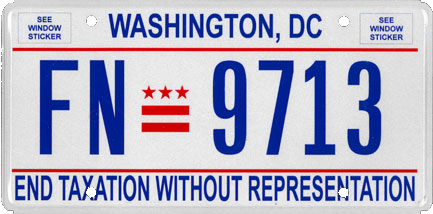
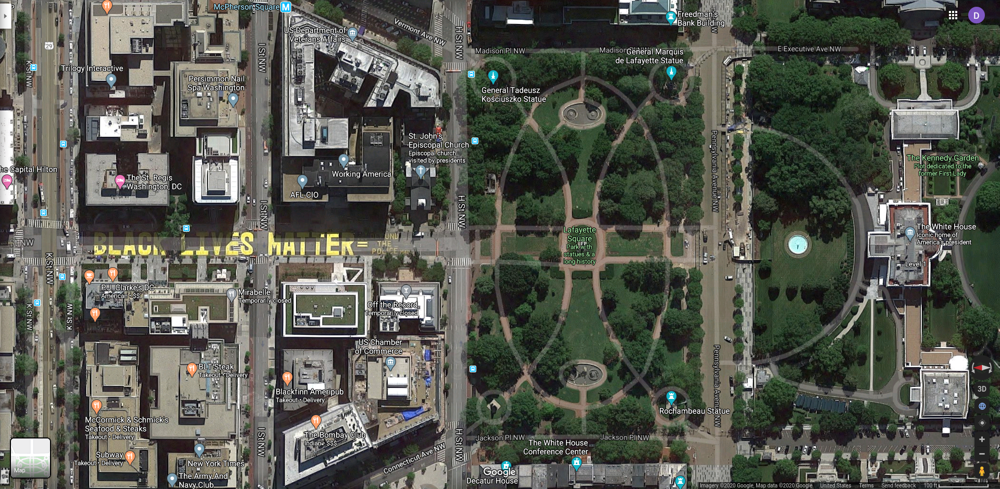
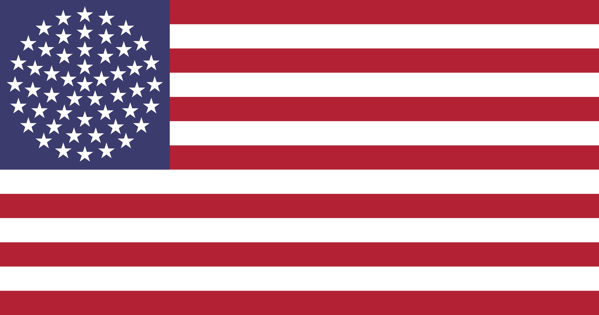
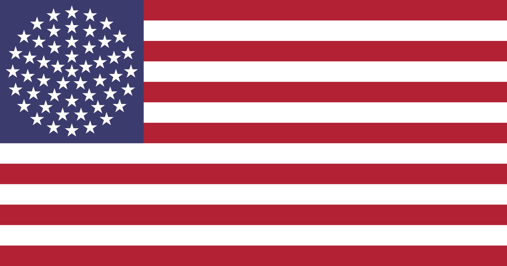

This week’s Riddler Classic is inspired by the House’s passage of legislation to make DC the 51st US state. The Riddler’s prompt holds a special place in my heart, as someone both born and raised in Washington, DC. I still have my (202) - cell number. You can skip down to here for my answer to the Riddler Classic or keep reading for some brief context about DC.
library(leaflet)
library(tigris)
options(tigris_use_cache = TRUE)
DC_sf <- counties(state = "dc")
dc_tract <- tracts(state = "dc")
DC_sf %>%
leaflet() %>%
addTiles() %>%
setView(lng = -77.03637, lat = 38.89511, zoom = 11) %>%
addPolygons(fillOpacity = 0.1,
color = "black") %>%
widgetframe::frameWidget()
As wikipedia notes in their Statehood movement in the District of Columbia article:
If the District of Columbia were to become a state – based on 2018 figures – it would rank 49th by population (ahead of Vermont and Wyoming), 51st by area, 1st by GDP per capita, 1st by median household income, and 34th by total GDP.
DC, unfortunately, serves as a microcosm of the many contradictions of the US. While DC may have the highest GDP per capita and median household income in the US, examining DC more closely illuminates a wide spread in both income and socio-economic status.
Poverty Rates by Census tract (2018)
How any American finds these levels of poverty acceptable anywhere, let alone in their nation’s capital, is beyond me. The poorest tracts in the city have over 50% poverty rates. While there are a wide range of economic complications that make creating the city budget difficult, the most egregious in my opinion, is that DC is unable to set local taxes nor a budget without the approval of Congress. DC has a nonvoting congressional representative and no Senator. No other state has this sort of relationship with the federal government. Even when a super majority of Washingtonians approve a budget, Congress can and has struck down the budget, repeatedly.
The legal precedent for the relationship becomes less and less tenable with several protest movements of widespread popularity in the city.

The irony of DC is using the original slogan for US independence seems to have gotten lost…
As with many issues of wealth in the US, it is unsurprising that the income segregation in DC is also intertwined with race. As can be seen below, African-Americans disproportionately reside in the South and Southeast.
African American Percentages by Census tract (2018)
African Americans have a long history in DC with many struggles that continue to this day. You can read a brief history of African Americans in DC by Historian Dr. Marya Annette McQuirter here. While much progress has happen in DC, there is still much work to do.

Black lives matter; Defund the police
While we await the final outcome of DC’s proposed statehood (the Repulican controlled Senete will most likely reject it…), let’s flip to this week’s Riddler Classic.
Riddler Classic
The 50 stars on the American flag are arranged in such a way that they form two rectangles. The larger rectangle is 5 stars wide, 6 stars long; the smaller rectangle is embedded inside the larger and is 4 stars wide, 5 stars long. This square-like pattern of stars is possible because the number of states (50) is twice a square number (25).
It just so happens that when N equals 50, N is twice a square and N+1 is a centered pentagonal number. After 50, what is the next integer N with these properties?
 

The circle design would be pretty cool to have on the American flag, although, I’d imagine some animosity over which state gains the center star. In the current version of the flag, all stars seem to hold equal weight, perhaps reflecting the weight of each state in the union. However, I digress, let’s get back to the problem.
Luckily for us, we have a closed form of the centered pentagonal number which, if the next \(N\) isn’t too large, we can just brute force the calculation. Let’s generate the first 100,000 centered pentagonal numbers.
pen_generator <- function(x){
(5*x^2 + 5*x + 2)/2
}
range <- 0:100000
pen_numbers <- pen_generator(range)
head(pen_numbers, n = 10)
## [1] 1 6 16 31 51 76 106 141 181 226
Here are the first 10 centered pentagonal numbers. With this information we can look at which of the centered pentagonal numbers (\(N+1\)) are one more than a number which its half is square (\(N=2S\) and \(S\) is a square number). I am using integer truncation (i.e. round to lowest integer) to verify if \(S\) is actually a square number.
g <- function(x){
y <- 2*(as.integer(sqrt((x - 1)/2))**2) + 1
results <- ifelse(x==y, x, NA)
return(results)
}
stars <- g(pen_numbers)
stars[!is.na(stars)]
## [1] 1 51 16201 5216451 1679680801
It looks like there aren’t too many numbers with this property. Out of 100,000 potential candidates, there are only 5 and the numbers grow exponentially in size. A better mathematician may deduce why there are exponentially gaps between the numbers. For now, I will answer the riddle with my answer of \(N+1 = 16201 \implies N = 16200\).
If you want to see how the plots were created, check out the github page for this post.